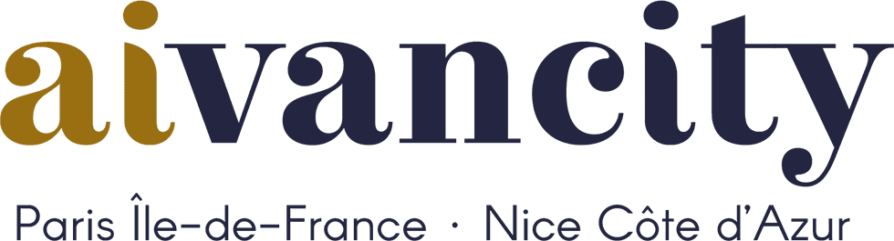

Explore my journey, passions, and aspirations in AI and data science.
My Journey
My strong interest in mathematics and computer science has led me to the dynamic field of artificial intelligence (AI). As a third-year student at aivancity Paris-Cachan, a leading school in AI and data science, I am building a solid foundation in both theoretical and practical aspects of AI, data science, and programming. My education focuses on combining technical expertise with innovative problem-solving to address real-world challenges.
Throughout my studies, including projects in the AI Clinic, and my professional experiences, I have worked on a variety of projects across the AI spectrum, taking on roles such as data scientist, data engineer, and even ethics-focused positions like Technical Ethics Officer. These experiences have highlighted the breadth and depth of the AI field and the opportunities it offers for everyone to find their niche and make meaningful contributions.
Driven by curiosity and a commitment to growth, I am actively seeking new challenges and opportunities to collaborate on innovative AI projects. If you’d like to discuss ideas, share insights, or explore potential collaborations, let’s connect ✨
Education
-
aivancity Paris–Cachan
Master’s in AI & Data Science
Graduation: July 2027
Club: Basketball -
University of California, Santa Barbara
Game Development • Intermediate Python • Problem Solving • Business Strategy
(UCSB Immersion Program via aivancity, Mar – Aug 2025) -
Cours Sainte Marie de Hann, Dakar
Scientific Baccalaureate S1 with honors (Math & Physics‑Chemistry)
Graduation: 2022
Club: Basketball and Chess.
“Become whoever you wish to be.”
– Florian Hounkpatin